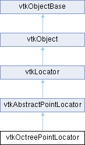

|
Etrek
|
|
Etrek
|
an octree spatial decomposition of a set of points More...
#include <vtkOctreePointLocator.h>

Public Member Functions | |
| vtkTypeMacro (vtkOctreePointLocator, vtkAbstractPointLocator) | |
| void | PrintSelf (ostream &os, vtkIndent indent) override |
| void | GetRegionBounds (int regionID, double bounds[6]) |
| void | GetRegionDataBounds (int leafNodeID, double bounds[6]) |
| int | GetRegionContainingPoint (double x, double y, double z) |
| void | BuildLocator () override |
| void | ForceBuildLocator () override |
| vtkIdType | FindClosestPointWithinRadius (double radius, const double x[3], double &dist2) override |
| void | FindPointsWithinRadius (double radius, const double x[3], vtkIdList *result) override |
| void | FindClosestNPoints (int N, const double x[3], vtkIdList *result) override |
| VTK_NEWINSTANCE vtkIdTypeArray * | GetPointsInRegion (int leafNodeId) |
| void | FreeSearchStructure () override |
| void | GenerateRepresentation (int level, vtkPolyData *pd) override |
| void | FindPointsInArea (double *area, vtkIdTypeArray *ids, bool clearArray=true) |
| vtkSetMacro (MaximumPointsPerRegion, int) | |
| vtkGetMacro (MaximumPointsPerRegion, int) | |
| vtkSetMacro (CreateCubicOctants, int) | |
| vtkGetMacro (CreateCubicOctants, int) | |
| vtkGetMacro (FudgeFactor, double) | |
| vtkSetMacro (FudgeFactor, double) | |
| double * | GetBounds () override |
| void | GetBounds (double *bounds) override |
| vtkGetMacro (NumberOfLeafNodes, int) | |
| vtkIdType | FindClosestPoint (const double x[3]) override |
| vtkIdType | FindClosestPoint (double x, double y, double z, double &dist2) |
| vtkIdType | FindClosestPointInRegion (int regionId, double *x, double &dist2) |
| vtkIdType | FindClosestPointInRegion (int regionId, double x, double y, double z, double &dist2) |
| Public Member Functions inherited from vtkAbstractPointLocator | |
| vtkTypeMacro (vtkAbstractPointLocator, vtkLocator) | |
| vtkIdType | FindClosestPoint (double x, double y, double z) |
| void | FindClosestNPoints (int N, double x, double y, double z, vtkIdList *result) |
| void | FindPointsWithinRadius (double R, double x, double y, double z, vtkIdList *result) |
| vtkGetMacro (NumberOfBuckets, vtkIdType) | |
| Public Member Functions inherited from vtkLocator | |
| virtual void | Update () |
| virtual void | Initialize () |
| vtkTypeMacro (vtkLocator, vtkObject) | |
| virtual void | SetDataSet (vtkDataSet *) |
| vtkGetObjectMacro (DataSet, vtkDataSet) | |
| vtkSetClampMacro (MaxLevel, int, 0, VTK_INT_MAX) | |
| vtkGetMacro (MaxLevel, int) | |
| vtkGetMacro (Level, int) | |
| vtkSetMacro (Automatic, vtkTypeBool) | |
| vtkGetMacro (Automatic, vtkTypeBool) | |
| vtkBooleanMacro (Automatic, vtkTypeBool) | |
| vtkSetClampMacro (Tolerance, double, 0.0, VTK_DOUBLE_MAX) | |
| vtkGetMacro (Tolerance, double) | |
| vtkSetMacro (UseExistingSearchStructure, vtkTypeBool) | |
| vtkGetMacro (UseExistingSearchStructure, vtkTypeBool) | |
| vtkBooleanMacro (UseExistingSearchStructure, vtkTypeBool) | |
| vtkGetMacro (BuildTime, vtkMTimeType) | |
| bool | UsesGarbageCollector () const override |
| Public Member Functions inherited from vtkObject | |
| vtkBaseTypeMacro (vtkObject, vtkObjectBase) | |
| virtual void | DebugOn () |
| virtual void | DebugOff () |
| bool | GetDebug () |
| void | SetDebug (bool debugFlag) |
| virtual void | Modified () |
| virtual vtkMTimeType | GetMTime () |
| void | RemoveObserver (unsigned long tag) |
| void | RemoveObservers (unsigned long event) |
| void | RemoveObservers (const char *event) |
| void | RemoveAllObservers () |
| vtkTypeBool | HasObserver (unsigned long event) |
| vtkTypeBool | HasObserver (const char *event) |
| vtkTypeBool | InvokeEvent (unsigned long event) |
| vtkTypeBool | InvokeEvent (const char *event) |
| std::string | GetObjectDescription () const override |
| unsigned long | AddObserver (unsigned long event, vtkCommand *, float priority=0.0f) |
| unsigned long | AddObserver (const char *event, vtkCommand *, float priority=0.0f) |
| vtkCommand * | GetCommand (unsigned long tag) |
| void | RemoveObserver (vtkCommand *) |
| void | RemoveObservers (unsigned long event, vtkCommand *) |
| void | RemoveObservers (const char *event, vtkCommand *) |
| vtkTypeBool | HasObserver (unsigned long event, vtkCommand *) |
| vtkTypeBool | HasObserver (const char *event, vtkCommand *) |
| template<class U, class T> | |
| unsigned long | AddObserver (unsigned long event, U observer, void(T::*callback)(), float priority=0.0f) |
| template<class U, class T> | |
| unsigned long | AddObserver (unsigned long event, U observer, void(T::*callback)(vtkObject *, unsigned long, void *), float priority=0.0f) |
| template<class U, class T> | |
| unsigned long | AddObserver (unsigned long event, U observer, bool(T::*callback)(vtkObject *, unsigned long, void *), float priority=0.0f) |
| vtkTypeBool | InvokeEvent (unsigned long event, void *callData) |
| vtkTypeBool | InvokeEvent (const char *event, void *callData) |
| virtual void | SetObjectName (const std::string &objectName) |
| virtual std::string | GetObjectName () const |
| Public Member Functions inherited from vtkObjectBase | |
| const char * | GetClassName () const |
| virtual vtkTypeBool | IsA (const char *name) |
| virtual vtkIdType | GetNumberOfGenerationsFromBase (const char *name) |
| virtual void | Delete () |
| virtual void | FastDelete () |
| void | InitializeObjectBase () |
| void | Print (ostream &os) |
| void | Register (vtkObjectBase *o) |
| virtual void | UnRegister (vtkObjectBase *o) |
| int | GetReferenceCount () |
| void | SetReferenceCount (int) |
| bool | GetIsInMemkind () const |
| virtual void | PrintHeader (ostream &os, vtkIndent indent) |
| virtual void | PrintTrailer (ostream &os, vtkIndent indent) |
Static Public Member Functions | |
| static vtkOctreePointLocator * | New () |
| Static Public Member Functions inherited from vtkObject | |
| static vtkObject * | New () |
| static void | BreakOnError () |
| static void | SetGlobalWarningDisplay (vtkTypeBool val) |
| static void | GlobalWarningDisplayOn () |
| static void | GlobalWarningDisplayOff () |
| static vtkTypeBool | GetGlobalWarningDisplay () |
| Static Public Member Functions inherited from vtkObjectBase | |
| static vtkTypeBool | IsTypeOf (const char *name) |
| static vtkIdType | GetNumberOfGenerationsFromBaseType (const char *name) |
| static vtkObjectBase * | New () |
| static void | SetMemkindDirectory (const char *directoryname) |
| static bool | GetUsingMemkind () |
Protected Member Functions | |
| void | BuildLocatorInternal () override |
| void | BuildLeafNodeList (vtkOctreePointLocatorNode *node, int &index) |
| void | FindPointsWithinRadius (vtkOctreePointLocatorNode *node, double radiusSquared, const double x[3], vtkIdList *ids) |
| void | AddAllPointsInRegion (vtkOctreePointLocatorNode *node, vtkIdList *ids) |
| void | FindPointsInArea (vtkOctreePointLocatorNode *node, double *area, vtkIdTypeArray *ids) |
| void | AddAllPointsInRegion (vtkOctreePointLocatorNode *node, vtkIdTypeArray *ids) |
| void | DivideRegion (vtkOctreePointLocatorNode *node, int *ordering, int level) |
| int | DivideTest (int size, int level) |
| void | AddPolys (vtkOctreePointLocatorNode *node, vtkPoints *pts, vtkCellArray *polys) |
| int | FindClosestPointInRegion_ (int leafNodeId, double x, double y, double z, double &dist2) |
| int | FindClosestPointInSphere (double x, double y, double z, double radius, int skipRegion, double &dist2) |
| vtkOctreePointLocator (const vtkOctreePointLocator &)=delete | |
| void | operator= (const vtkOctreePointLocator &)=delete |
| int | FindRegion (vtkOctreePointLocatorNode *node, float x, float y, float z) |
| int | FindRegion (vtkOctreePointLocatorNode *node, double x, double y, double z) |
| Protected Member Functions inherited from vtkLocator | |
| void | ReportReferences (vtkGarbageCollector *) override |
| Protected Member Functions inherited from vtkObject | |
| void | RegisterInternal (vtkObjectBase *, vtkTypeBool check) override |
| void | UnRegisterInternal (vtkObjectBase *, vtkTypeBool check) override |
| void | InternalGrabFocus (vtkCommand *mouseEvents, vtkCommand *keypressEvents=nullptr) |
| void | InternalReleaseFocus () |
| Protected Member Functions inherited from vtkObjectBase | |
| vtkObjectBase (const vtkObjectBase &) | |
| void | operator= (const vtkObjectBase &) |
Static Protected Member Functions | |
| static void | SetDataBoundsToSpatialBounds (vtkOctreePointLocatorNode *node) |
| static void | DeleteAllDescendants (vtkOctreePointLocatorNode *octant) |
| Static Protected Member Functions inherited from vtkObjectBase | |
| static vtkMallocingFunction | GetCurrentMallocFunction () |
| static vtkReallocingFunction | GetCurrentReallocFunction () |
| static vtkFreeingFunction | GetCurrentFreeFunction () |
| static vtkFreeingFunction | GetAlternateFreeFunction () |
Protected Attributes | |
| vtkOctreePointLocatorNode * | Top |
| vtkOctreePointLocatorNode ** | LeafNodeList |
| double | FudgeFactor |
| int | NumberOfLocatorPoints |
| float * | LocatorPoints |
| int * | LocatorIds |
| float | MaxWidth |
| int | CreateCubicOctants |
| int | MaximumPointsPerRegion |
| int | NumberOfLeafNodes |
| Protected Attributes inherited from vtkAbstractPointLocator | |
| double | Bounds [6] |
| vtkIdType | NumberOfBuckets |
| Protected Attributes inherited from vtkLocator | |
| vtkDataSet * | DataSet |
| vtkTypeBool | UseExistingSearchStructure |
| vtkTypeBool | Automatic |
| double | Tolerance |
| int | MaxLevel |
| int | Level |
| vtkTimeStamp | BuildTime |
| Protected Attributes inherited from vtkObject | |
| bool | Debug |
| vtkTimeStamp | MTime |
| vtkSubjectHelper * | SubjectHelper |
| std::string | ObjectName |
| Protected Attributes inherited from vtkObjectBase | |
| std::atomic< int32_t > | ReferenceCount |
| vtkWeakPointerBase ** | WeakPointers |
an octree spatial decomposition of a set of points
Given a vtkDataSet, create an octree that is locally refined such that all leaf octants contain less than a certain amount of points. Note that there is no size constraint that a leaf octant in relation to any of its neighbors.
This class can also generate a PolyData representation of the boundaries of the spatial regions in the decomposition.
|
overridevirtual |
Create the octree decomposition of the cells of the data set or data sets. Cells are assigned to octree spatial regions based on the location of their centroids.
This will NOT do anything if UseExistingSearchStructure is on.
Implements vtkLocator.
|
overrideprotectedvirtual |
This function is not pure virtual to maintain backwards compatibility.
Reimplemented from vtkLocator.
|
overridevirtual |
Find the closest N points to a position. This returns the closest N points to a position. A faster method could be created that returned N close points to a position, but not necessarily the exact N closest. The returned points are sorted from closest to farthest. These methods are thread safe if BuildLocator() is directly or indirectly called from a single thread first.
Implements vtkAbstractPointLocator.
|
overridevirtual |
Return the Id of the point that is closest to the given point. Set the square of the distance between the two points.
Implements vtkAbstractPointLocator.
| vtkIdType vtkOctreePointLocator::FindClosestPointInRegion | ( | int | regionId, |
| double * | x, | ||
| double & | dist2 ) |
Find the Id of the point in the given leaf region which is closest to the given point. Return the ID of the point, and set the square of the distance of between the points.
|
protected |
Given a leaf node id and point, return the local id and the squared distance between the closest point and the given point.
|
protected |
Given a location and a radiues, find the closest point within this radius. The function does not examine the region with Id equal to skipRegion (do not set skipRegion to -1 as all non-leaf octants have -1 as their Id). The Id is returned along with the distance squared for success and -1 is returned for failure.
|
overridevirtual |
Given a position x and a radius r, return the id of the point closest to the point in that radius. dist2 returns the squared distance to the point.
Implements vtkAbstractPointLocator.
| void vtkOctreePointLocator::FindPointsInArea | ( | double * | area, |
| vtkIdTypeArray * | ids, | ||
| bool | clearArray = true ) |
Fill ids with points found in area. The area is a 6-tuple containing (xmin, xmax, ymin, ymax, zmin, zmax). This method will clear the array by default. To append ids to an array, set clearArray to false.
|
overridevirtual |
Find all points within a specified radius of position x. The result is not sorted in any specific manner.
Implements vtkAbstractPointLocator.
|
protected |
Recursive helper for public FindPointsWithinRadius. radiusSquared is the square of the radius and is used in order to avoid the expensive square root calculation.
|
protected |
Given a point and a node return the leaf node id that contains the point. The function returns -1 if no nodes contain the point.
|
overridevirtual |
Build the locator from the input dataset (even if UseExistingSearchStructure is on).
Reimplemented from vtkLocator.
|
overridevirtual |
Delete the octree data structure.
Implements vtkLocator.
|
overridevirtual |
Create a polydata representation of the boundaries of the octree regions.
Implements vtkLocator.
|
overridevirtual |
Get the spatial bounds of the entire octree space. Sets bounds array to xmin, xmax, ymin, ymax, zmin, zmax.
Reimplemented from vtkAbstractPointLocator.
|
overridevirtual |
Reimplemented from vtkAbstractPointLocator.
| VTK_NEWINSTANCE vtkIdTypeArray * vtkOctreePointLocator::GetPointsInRegion | ( | int | leafNodeId | ) |
Get a list of the original IDs of all points in a leaf node.
| void vtkOctreePointLocator::GetRegionBounds | ( | int | regionID, |
| double | bounds[6] ) |
Get the spatial bounds of octree region
| int vtkOctreePointLocator::GetRegionContainingPoint | ( | double | x, |
| double | y, | ||
| double | z ) |
Get the id of the leaf region containing the specified location.
| void vtkOctreePointLocator::GetRegionDataBounds | ( | int | leafNodeID, |
| double | bounds[6] ) |
Get the bounds of the data within the leaf node
|
overridevirtual |
Methods invoked by print to print information about the object including superclasses. Typically not called by the user (use Print() instead) but used in the hierarchical print process to combine the output of several classes.
Reimplemented from vtkAbstractPointLocator.
| vtkOctreePointLocator::vtkGetMacro | ( | FudgeFactor | , |
| double | ) |
Some algorithms on octrees require a value that is a very small distance relative to the diameter of the entire space divided by the octree. This factor is the maximum axis-aligned width of the space multiplied by 10e-6.
| vtkOctreePointLocator::vtkGetMacro | ( | NumberOfLeafNodes | , |
| int | ) |
The number of leaf nodes of the tree, the spatial regions
| vtkOctreePointLocator::vtkSetMacro | ( | CreateCubicOctants | , |
| int | ) |
Get/Set macro for CreateCubicOctants.
| vtkOctreePointLocator::vtkSetMacro | ( | MaximumPointsPerRegion | , |
| int | ) |
Maximum number of points per spatial region. Default is 100.
|
protected |
If CreateCubicOctants is non-zero, the bounding box of the points will be expanded such that all octants that are created will be cube-shaped (e.g. have equal lengths on each side). This may make the tree deeper but also results in better shaped octants for doing searches. The default is to have this set on.
|
protected |
The maximum number of points in a region/octant before it is subdivided.